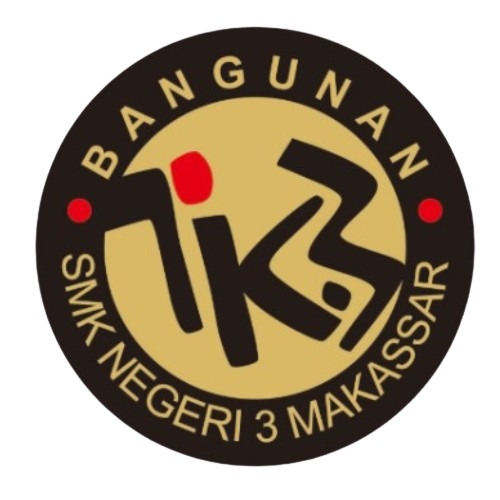
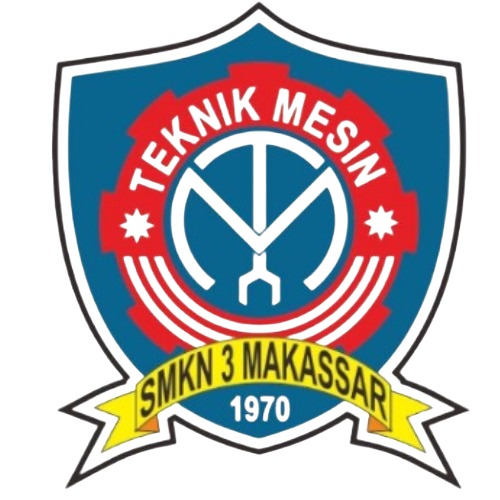
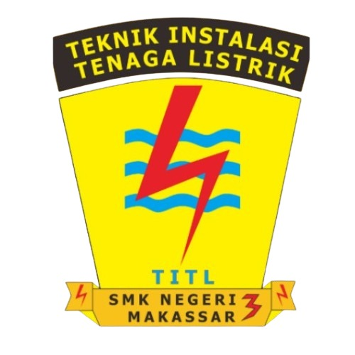
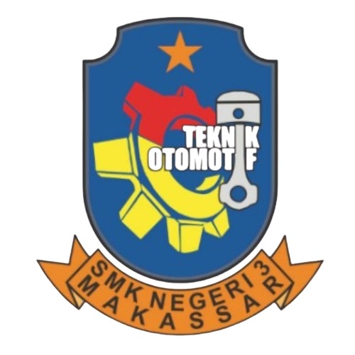
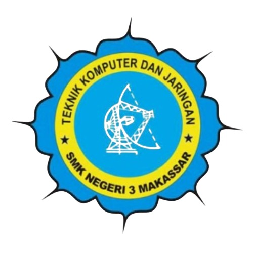
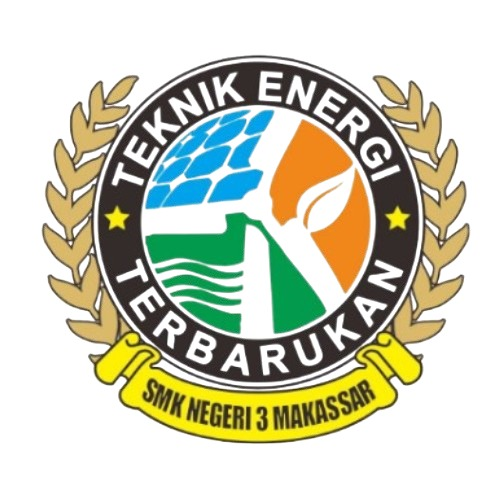

| Logo | Nama Jurusan | Deskripsi |
|---|---|---|
|  | Teknologi Konstruksi & Propert | Jurusan Teknologi Konstruksi dan Properti (TKP) di SMK berfokus pada pembelajaran perencanaan, pelaksanaan, serta pengelolaan proyek bangunan dan properti. Siswa mempelajari gambar teknik, perhitungan biaya (RAB), penggunaan perangkat lunak desain, teknik konstruksi lapangan, hingga aspek bisnis dan manajemen properti. Lulusan jurusan ini dibekali keterampilan sebagai drafter, estimator, surveyor, pengawas proyek, maupun wirausaha di bidang jasa konstruksi, sehingga membuka peluang kerja luas di sektor konstruksi dan pengembangan properti. |
|  | Teknik Pemesinan | Jurusan Teknik Pemesinan di SMK mempelajari keterampilan mengoperasikan mesin perkakas (bubut, frais, gerinda, CNC), teknik pengelasan, menggambar teknik, serta penggunaan perangkat lunak desain mekanik. Siswa dilatih untuk membuat, merakit, memperbaiki, dan memelihara komponen mesin sesuai standar industri. Lulusan jurusan ini memiliki peluang kerja sebagai operator mesin, teknisi produksi, quality control, drafter mekanik, hingga wirausaha di bidang permesinan atau manufaktur |
|  | Teknik Ketenagalistrikan | Jurusan Teknik Ketenagalistrikan di SMK berfokus pada pembelajaran instalasi, perawatan, dan perbaikan sistem tenaga listrik, baik untuk rumah tangga, industri, maupun kelistrikan terbarukan. Siswa dibekali keterampilan membaca gambar rangkaian, merancang instalasi, menggunakan alat ukur listrik, hingga memahami keselamatan kerja (K3). Lulusan jurusan ini berpeluang bekerja sebagai teknisi instalasi listrik, teknisi perawatan industri, tenaga kontrol sistem, atau wirausaha jasa instalasi listrik |
|  | Teknik Otomotif | Jurusan Teknik Otomotif di SMK berfokus pada pembelajaran perawatan, perbaikan, dan modifikasi kendaraan bermotor, meliputi sistem mesin, kelistrikan, chasis, dan sistem pemindah tenaga. Siswa dilatih menggunakan peralatan bengkel, mendiagnosis kerusakan, hingga menguasai teknologi otomotif modern. Lulusan jurusan ini dapat bekerja sebagai teknisi bengkel, mekanik kendaraan ringan, teknisi servis di dealer resmi, instruktur otomotif, maupun wirausaha di bidang bengkel dan jasa perawatan kendaraan |
|  | Teknik Komputer & Jaringan | Jurusan Teknik Komputer dan Jaringan (TKJ) di SMK mempelajari dasar-dasar komputer, jaringan kabel maupun nirkabel, konfigurasi perangkat jaringan (router, switch), sistem operasi, hingga keamanan jaringan. Siswa dibekali keterampilan merakit dan memperbaiki komputer, mengelola server, serta membangun dan memelihara jaringan internet di berbagai skala. Lulusan jurusan ini memiliki peluang kerja sebagai teknisi jaringan, administrator sistem, teknisi komputer, atau wirausaha di bidang jasa IT dan layanan internet |
|  | Teknik Energi Surya dan Angin | Jurusan Teknik Energi Surya dan Angin di SMK mempelajari perancangan, instalasi, perawatan, dan pengoperasian sistem energi terbarukan berbasis tenaga surya (panel surya) dan tenaga angin (turbin angin). Siswa dibekali pemahaman dasar listrik, sistem konversi energi, penggunaan alat ukur, serta penerapan prinsip keselamatan kerja. Lulusan jurusan ini berpeluang bekerja sebagai teknisi energi terbarukan, perancang sistem tenaga surya/angin, teknisi perawatan instalasi listrik ramah lingkungan, maupun wirausaha di bidang energi mandiri |